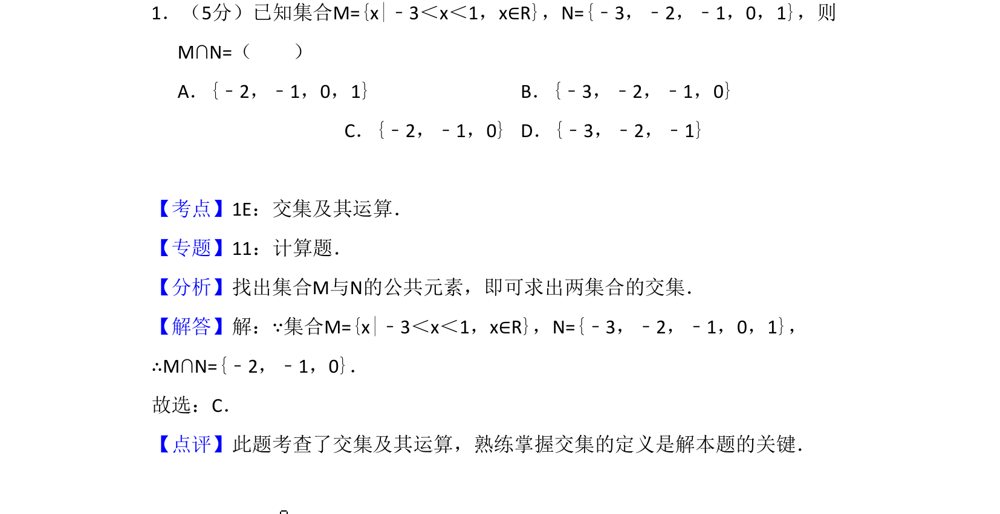
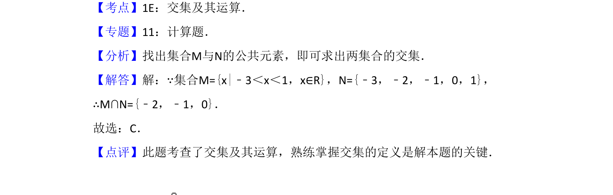

考点：交集运算 集合

求两集合的交集，运用交集定义求解。

📄 原 PDF 第 1 页：
素材/真题/吉林/2008-2024·（吉林）数学高考真题/2013年高考数学试卷（文）（新课标Ⅱ）（解析卷）.pdf
1．（5分）已知集合M={x|﹣3＜x＜1，x∈R}，N={﹣3，﹣2，﹣1，0，1}，则 M∩N=（ ） A．{﹣2，﹣1，0，1}B．{﹣3，﹣2，﹣1，0} C．{﹣2，﹣1，0}D．{﹣3，﹣2，﹣1}
【考点】1E：交集及其运算．菁优网版权所有 【专题】11：计算题． 【分析】找出集合M与N的公共元素，即可求出两集合的交集． 【解答】解：∵集合M={x|﹣3＜x＜1，x∈R}，N={﹣3，﹣2，﹣1，0，1}， ∴M∩N={﹣2，﹣1，0}． 故选：C． 【点评】此题考查了交集及其运算，熟练掌握交集的定义是解本题的关键．